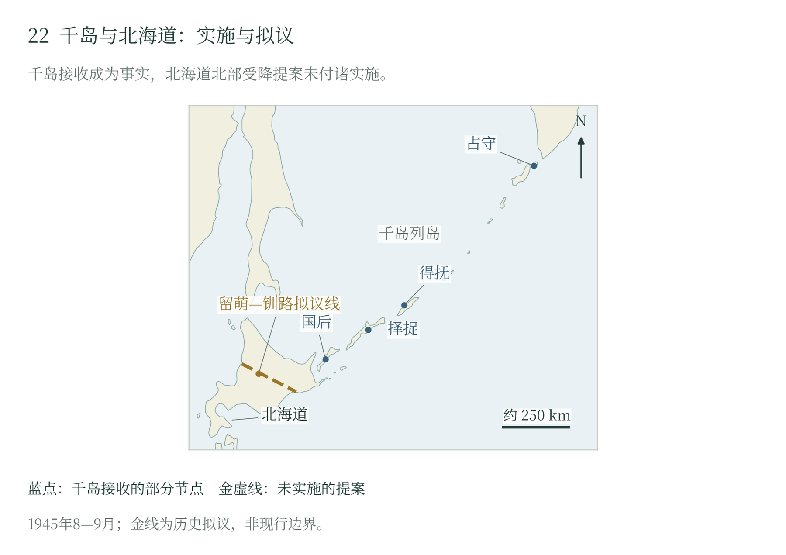

第十五章 朝鲜、南萨哈林与千岛：战争怎样结束
港口、海峡与受降区域
1945年8月，苏军在东北腹地取得进展的同时，沿朝鲜东北海岸、南萨哈林和千岛展开行动。这些战场共同关系到日本大陆军队的海上通道、苏联远东的海峡出入口，以及投降之后由谁进入当地、接受武器和组织行政。港口具有双重意义：战斗期间供部队与物资进出，战争收尾时又成为接收军队、集结船舶和运送人员的中心。陆军的推进与舰队的登陆，在这里直接连接到盟国的受降安排。〔1〕
离开东北平原，苏军要面对另一套难题。朝鲜沿海有山路、桥梁和狭长海岸，南萨哈林有森林与沼泽，千岛登陆还要等舟艇、通信和卸载跟上。远东司令部可以下达共同任务，部队每到一地，仍须找出通过道路、靠近港口和把重武器送上岸的办法。
朝鲜北部：从沿海协同到分区受降
朝鲜东北部位于满洲战场的海上出口。远东第一方面军第25集团军向图们江流域及沿海推进，太平洋舰队则向雄基、罗津、清津等港口行动。苏军陆上先遣部队需要处理桥梁破坏、道路拥塞和山地通路，舰队登陆由海上切入，增加了日军沿岸撤收和维持交通的困难。陆海行动从不同方向接近同一批节点，最终将部队的突破转成对港口和道路的控制。〔2〕
清津是这一协同最集中的战场。第13海军步兵旅的战后报告记载，该旅6—7月练习过向无设备海岸及港内登陆，并进行参谋演习；8月临战集中时，炮兵、通信和后勤人员尚未全部到齐，需要紧急补充。该旅接到的任务是控制清津港，坚持到远东第一方面军的陆军到达。训练基础、临时补充与先后到达的登陆梯队，共同构成实际投入战斗的力量。〔3〕
最早登陆的分队向市内和铁路区域扩展，遭到日军反击。第13旅报告批评了13日突击连的使用：它进入市区后受到包围，损失严重，后续第355海军步兵营因而缺乏稳固登陆场及充分敌情。报告建议，第一批人员应先掌握港口建筑，派小组侦察，再保障后续梯队上岸；炮兵和迫击炮也应随第一梯队抵达。这些反思为检视登陆组织、情报与火力到位提供了依据。〔4〕
14日上岸的第355营与15日投入的第13旅，在舰炮支援下扩大港区控制。进入城北后，陡峭高地、林地和既设工事改变了进攻条件，部队转入侦察、固守和逐点争夺。海军步兵报告把主要占领任务的完成记在16日，又记述17日仍有外围阵地战斗和与陆军会合，18日继续夺取机场。17日，方面军和舰队各自向上级报告，第393步兵师已与登陆部队接触。港区突破、外围控制和陆海会合构成了先后相接的几个阶段。〔5〕
第13旅的战后报告也记下了代价：第355营阵亡63人、负伤89人，报告单列的第13旅阵亡100人、负伤122人；13日先头分队、其他参战力量与船舶另有统计范围。这些损失发生在登陆场狭小、重火器尚未全部抵达、部队反复争夺高地的战斗中。报告把伤亡与登陆组织的缺陷一同记下，指挥责任因而有了具体的追问之处。伤员还要后送，缺额还须补充，继续向其他港口行动的部队也要为此前的急促付出时间。 〔4〕
这一会合为继续向南行动提供了支点。梅列茨科夫17日晚命令第25集团军自18日起将部队开入朝鲜，指定了步兵师和坦克旅。舰队则继续运送登陆部队：第13旅报告记载，21日部队进入元山港及北部市区，22日取得机场，23日控制南部市区。同期舰队电报又报告当地日军迟迟不交武器，苏军已在港区布防，舰艇准备支援。海上输送加速了部队到达，受降交涉和实际接管仍需逐处落实。〔6〕
日本在朝鲜的指挥结构原先着重应付本土决战的延伸威胁，南部与济州岛的防御具有重要位置；北部的作战指挥则与关东军相联系。战争末期，这种分工受到苏军入境和日本中央投降的共同冲击。部队在原驻地、铁路沿线和港口集合，决定人员去向的因素随即从原有隶属转向所在地域及接受投降的军队。〔7〕
北纬38度线进入这一局面的过程，具有明确的盟国决策背景。美国参谋长联席会议8月14日的备忘录解释，选择这条线，可使美国控制首尔的港口与交通区域，并保留未来多国行政安排的余地；文件同时承认，战后朝鲜治理的详细办法尚不完备。军事机关首先需要划定接受日军投降的责任，政治秩序则在随后的占领中逐步形成。〔8〕
朝鲜社会也在主动寻求结束殖民统治。日本投降前后，吕运亨等人的活动、建国准备委员会的成立和地方接管要求，改变了殖民政府维持秩序的条件。苏美军队分区进入以后，原日本官署、当地组织和占领机关之间的权力关系继续重组。港口与交通的控制因此具有政治后果：谁能够通行、谁掌握粮食与住房、谁能把命令送到地方，都会影响独立进程中的实际权力。〔9〕
分区受降也改变了日本军人及居民的回国途径。1945年12月，上月良夫的上奏副本称，38度线以南陆空军约17万人至11月15日大体复员，而北部仍有约6.3万人尚未复员。这是报告时点下的复员状态统计，呈现了同一殖民军事体系在战争结束后分成不同人员处置渠道的结果。与此同时，从满洲进入朝鲜的难民和当地日本居民争取南下或渡海，口岸、铁路与分区界线成为切身的生存条件。〔10〕
南萨哈林：陆上突破与沿海登陆相互推动
南萨哈林的战役从一项独立的方面军命令展开。8月10日，普尔卡耶夫命令第16集团军以第56步兵军自11日晨进攻，近期任务是向南夺取指定地域，并继续清除南部的日军力量。该手写命令同时授权调动两个独立坦克营支援进攻，将装甲力量的增援与地面攻势一并安排。这里的目标既包括破坏边境防御，也包括逐步控制岛上交通和沿海港口。〔11〕
正面进攻的关键，是苏方称为科通—哈拉米托盖的筑垒地域。它控制波罗奈河谷的狭窄通路，森林、沼泽和永久工事增加了绕行与攻击的困难。苏军11日展开行动，步兵沿正面及侧后接近，另有部队修筑道路、铺设通路、帮助车辆通过。13日试图继续突破主防御地带的进攻受挫。1946年形成的苏军战役总结，将原因归于坦克与航空支援不足、恶劣天气，以及部署任务时对车辆在森林沼泽中通行能力估计不够。〔12〕
随后进攻方法得到调整。步兵走在坦克前面，清理反坦克小组、打开障碍、铺设木道；突击组针对具体火力点行动，坦克跟进实施近距离射击，炮兵观察员随先头步兵接近目标。沿唯一主要道路集中和展开火炮，又要求在有限地幅内安排先后次序。16日，苏军从正面及后方攻击，突破主要防御地带。报告所描述的成功，建立在侦察、工程劳动和步炮坦协同的重新组织之上。〔13〕
海上行动同时改变了战役空间。16—19日的塔路—惠须取登陆行动从西岸切入；苏军战役总结记载，17日部队取得惠须取，20日又在舰艇支援下进入真冈。北太平洋区舰队及海军步兵与第16集团军共同参与，使日本守军既要应付由北向南的压力，又要面对沿岸港口被占后出现的侧后威胁。18日组成的机动支队沿东岸方向发展，第56军主力跟进，西岸登陆部队则承担向岛南港口和丰原推进的任务。〔14〕
这些安排持续到日本宣布投降之后。负责南萨哈林的第88师团隶属第五方面军；8月19日的日方指示要求推进停战交涉，同时保留在遭受攻击或被迫接受不当要求时采取自卫行动的空间。苏军远东总司令部18日发给三个方面军与太平洋舰队的命令，则要求在日满军停止战斗的地段立即停战，并善待投降人员。地方指挥官需要把这些指示落实为可由对方确认的行动：前线如何停止射击、使者怎样通行、何处交出武器，都影响港口推进与停战交涉。判断当地继续交战的责任，需要同时考察双方命令、实际接触和各部执行情况。〔15〕
25日，苏军远东总司令部参谋长向莫斯科报告，日军抵抗至23日末才停止，自24日起已无战斗。文件针对东京广播指责苏军继续攻击作出回应，以真冈向内陆推进遇阻解释持续战斗；另一份舰队总结则批评登陆后通信不稳、兵力调配与物资保障不足，造成行动延迟。前者是苏方对争议的答辩，后者保留了内部作战检讨。将这些记录与双方停战指示对读，可以看到受降要求、具体抵抗与陆海协调共同塑造了岛上最后几天的局面。〔16〕
同一批港口上，还有居民等待离岛。日方内务省报告的展示原页记载，大泊等地聚集疏散人群，交通拥挤，船舶运输与停战交涉相互牵连；报告当时掌握的已疏散人数为七万五千余人。前线继续南移，尚在岛上的人能否到达码头、能否获得补给，也随之改变。登陆部队争夺的港口，正是这些家庭的离岛出口。 〔17〕
战役的后半段又把南萨哈林连接到千岛。苏方舰队总结记载，大泊港取得后即用于集结部队和组织前往南千岛的船队。港口的占领由此产生超过岛内战斗的效果：它提供了一个新的出发点，改变了后续兵力输送的距离和方向。战役结束后的接管、航运和人员集中，成为苏军继续扩大地域控制的条件。〔18〕
占守与千岛：登陆战斗如何转为岛屿接收
占守岛位于千岛北端，接近堪察加。苏军在日本已宣布接受投降之后仓促组织登陆，17日出航、18日登岸。短促的准备时间、雾中接近和不熟悉的岸形，使先头部队、炮兵与补给出现脱节；涉水卸载损害了无线电设备，登陆部队难以及时获得所需火力。日本守军依托既设阵地，并投入坦克反击。苏军在大陆发挥的机械化优势，在这里先要经过登陆艇、滩头和卸载作业的考验。炮兵能否上岸、通信能否恢复，直接关系到先头部队的生存。 〔19〕
日军反击一度对滩头构成严重威胁，苏军则依靠已经上岸的步兵固守，并继续组织后续输送。占守战斗的高代价与登陆组织的困难直接相连。井澗裕对日苏材料的比较，同时呈现了双方对战果、停火和缴械先后次序的不同理解：19日起展开交涉后，双方仍需要协调舰艇进入、武器移交与守备部队集中。至23日，接收与缴械进入新的阶段。〔20〕
千岛其后的接收沿两个方向展开：北部依托堪察加及已控制的北端岛屿向南推进，南部利用南萨哈林港口组织船队。苏方事后报告把8月23日至9月5日作为相关军事占领行动的记录范围，记述侦察、日方代表参与联络、船舶抵达、登陆和收缴武器等动作。岛屿链中的每个驻军和港湾，都需要这些程序逐步落实。战斗激烈的占守与较晚接收的岛屿，因而在同一战区内呈现不同的战争终结经验。〔21〕
北海道的拟议受降区则由另一条决策线处理。斯大林8月16日要求把钏路—留萌线以北纳入苏方受降区域；杜鲁门17日复文接受千岛安排，同时拒绝北海道要求（FRUS题记为17日；研究文献多记18日复文，发送与收到日期存在歧义）。苏军方面曾进行附带条件的登陆准备，后续命令又将行动搁置并禁止实施。外交通信确立受降权限的争议，军事文件记录准备与停止的过程。两个层次共同说明，计划能够推进到何种程度，取决于运输、兵力与最高决策的结合。〔22〕
战争收尾的共同问题
朝鲜北部、南萨哈林与千岛的战事收尾，都经过了军队抵达、命令传递和地方交涉。日本中央已经接受投降，驻军仍须知道向谁交出武器，接收者也须派人进入港口和岛屿。盟国划定受降范围，实际到场的部队接着掌握交通与行政。于是一些地方还在交火，另一些地方已开始登记武器、集中人员和安排运输。
战争结束以后，人的归途仍远近不同。部队可以奉令停火，缴械军人接着等待集合、移送和回国；居民还得寻找食物、躲避疾病、打听失散的亲人，料理丢失的财产。朝鲜殖民统治的瓦解、萨哈林居民离岛和千岛驻军被接收，把许多人带离了原有生活。接下来，营地中的劳动、港口上的等待与家庭收到的消息，将继续讲述这场战争的后果。
关键节点与人员统计的范围
| 战场 | 接收过程 | 人员数字的范围 |
|---|---|---|
| 清津—元山 | 清津16日主要任务完成，17日陆海会合，18日机场行动；元山21—23日分区接管 | 第355营阵亡63、负伤89；报告单列第13旅阵亡100、负伤122。范围为战后报告列出的两组单位。[B508，页417、420、422—423] |
| 南萨哈林 | 11日开始进攻，16日突破主要防御；苏方25日报告称24日起无战斗 | 日方内务省报告所掌握已疏散七万五千余人，属报告时点的撤离数量。[B501；B503，页10—11；B509，页19；B505，第13—15图节选] |
| 占守—千岛 | 18日登陆，19—23日交涉与缴械；后续岛链接收记录延至9月5日 | 分岛、分阶段接收名册与登陆作战损失分别统计。[B012，页50—64；B116，页359—372] |
| 朝鲜南北 | 分区受降后，人员进入不同复员渠道 | 上月良夫12月报告：南部约17万人至11月15日大体复员，北部约6.3万人尚未复员。[B506，原图0867—0868] |

千岛各岛从不同方向接收，相关行动记录延续至9月5日。斯大林另于8月16日提出北海道北部受降区，杜鲁门17日拒绝，22日苏方复电再提此事；该方案没有成为实际占领。
随文简图 · 自然地理底图：Natural Earth；历史依据见本章注及大图22逐图来源。大图22（图册第22页）
本章注释
- 〔1〕 B010，页133—138；B503，页11；B509，页19上半文献393结论 ↩
- 〔2〕 B010，页133—137 ↩
- 〔3〕 B508，文献377，页414 ↩
- 〔4〕 B508，文献377，页419—420 ↩
- 〔5〕 B508，文献377，页415—417；文献380—381，页422 ↩
- 〔6〕 B508，文献382—383，页423；文献377，页417 ↩
- 〔7〕 B506，JACAR“朝鲜的战斗”及“第17方面军的复员”节 ↩
- 〔8〕 B510，页658 ↩
- 〔9〕 B506，JACAR“吕运亨交涉”及“临时行政机关”相关段 ↩
- 〔10〕 B506，原图0867—0868；JACAR“在朝鲜日本人的引扬”节 ↩
- 〔11〕 B501，第1页，ЦАМО Ф.238 Оп.170250 Д.1 Л.217 ↩
- 〔12〕 B503，文献390，页8—10 ↩
- 〔13〕 B503，文献390，页10—11 ↩
- 〔14〕 B503，文献390—391，页11 ↩
- 〔15〕 B104，達参特電第38号，页2113—2114；B602，文献433第1—2项，页56 ↩
- 〔16〕 B509，页19文献394及文献393结论；B104，页2113—2114；B602，页56 ↩
- 〔17〕 B505，Ref.B18090019900，第13—15图节选 ↩
- 〔18〕 B509，页19文献393结论 ↩
- 〔19〕 B012，页37—49 ↩
- 〔20〕 B012，页44—56、57—64 ↩
- 〔21〕 B116，文献24，页359—372 ↩
- 〔22〕 B009，页667—668；B112，页670；B111，页139—142；B005，页687—688 ↩